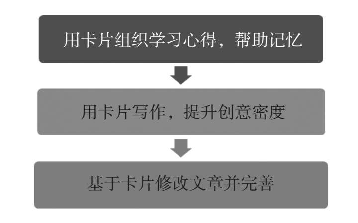

学习是每个人自己的事，知识就像我们内心向外界盛开的一朵花，一定是由内而外生长。那些看过的书、听过的课，如果没有做到输出，外在的知识很可能只是从眼前飘过，不留痕迹。想要把知识真正“据为己有”，必须通过输出来完成。写作和转述便是经典的知识输出方式，我们将在接下来的两节中分别探讨这个话题。
于写作而言，暂且不说“文章经国之大业，不朽之盛事”这些宏大层面的意义，作为一种自我表达的方式，希望能将自己所思所想写出来的渴求，是一点儿也不亚于人们对食、色的追逐的。对我们个人而言，作品就像一面镜子，一览无遗地将自己的所思所想呈现在纸上，照给自己看的同时，也照给别人看。“见字如面”，文字具有大面积、跨边界的社交魔力。
但是，写作对于很多人来说并非易事，写出来和仅在大脑中想一想，完全是两码事。大脑中的思考容易停留于碎片化，或者局限于某个知识点，但通过文字呈现出来时，则需要挖掘出想法背后更多的东西，更具逻辑性和体系化，并且能兼顾更宏大的思考局面。作为一个知识输出过程，写作至少能够在以下两个方面为我们带来全方位的锻炼：
第一，升级逻辑思考力。认知科学家斯蒂芬·平克曾经对写作的本质做过一个经典描述：“写作之难，在于把网状的思考，用树状的结构，体现在线性展开的语句里。”在知识输入过程中或者刚开始进行写作时，我们脑海里的思路总是非常离散和跳跃，在对一个知识进行思考时，也会同时涌上很多念头，且它们彼此之间没有密切联系，甚至混乱不堪，仿佛蜘蛛网一样丝丝缠绕，一圈围着一圈。这种状态如果反映在写作上，就是没有灵感或者书写混乱。
但是，写出来并呈现给读者的内容，必须如水般流畅，网状的思维必须经过“逻辑的关口”。这就要求我们在写作时把这些缠绕的思路抽丝剥茧，梳理清楚，就像剖析一棵树一样，细细分清树冠是什么，树枝是什么，树干是什么。最后，依据树状结构，用精当美妙的线性语言表达出来。
前段时间，阅读完《洋葱阅读法》后，我计划撰写一篇读书笔记。但这本书中涉及碎片阅读、主题阅读、深度阅读、卡尔笔记等大量阅读技巧，写下开篇之后，我便发现自己的思考变得杂乱。比如，主题阅读技巧重在阅读广度和数量，要求我们在短时间里快速、大量阅读同一主题；而深度阅读则强调理解的重要性，要求我们不需求快求全，而是潜心钻研。两者看似相互矛盾，又似乎存在着特殊联系。在实际生活中，我们究竟应该偏重主题阅读，还是偏重深度阅读？抑或是二者相辅相成会起到更好的效果？
于是，我重新梳理自己的思绪，跳出一个个独立的阅读技巧，以更加宏观的视角来审视整本书的框架和逻辑，发现全书隐含了三个循序渐进的阅读阶段，即基础阅读阶段——体系化阶段——融合阶段。其中，基础阅读阶段对应快速阅读，旨在提升阅读速度，它是其他阅读能力的基础；体系化阶段对应主题阅读，通过拓宽阅读的广度来为阅读的深度打基础；融合阶段对应深度阅读，因为只有深度阅读，才能将主题阅读的内容进行整合升华。至此，在具体阅读技巧的理解和使用上，我不仅梳理出了一个脉络清晰、层次分明的线性思考过程，并且进一步深化了对全书逻辑的整体认知。
你可以尝试一览无遗地将自己的所学尽数呈现在纸上，从而鞭策自己不断思考，将杂乱无章的念头梳理成周密严谨的文章。通过一次次具体的写作输出过程，你的逻辑思维能力便会得到很大提升。
第二，打造个人品牌。关于写作对个人会产生的价值，不少人都听过罗振宇在某综艺节目中说过的一句话：“未来社会最重要的资产，是影响力。构成影响力最重要的是两个能力，第一是写作，第二是演讲。”而令我印象深刻的，则是职场作家弗兰克所说的：“写作是没有声音的万人演讲，如果想要有所成就，写作是必备技能之一。”两句话不约而同地表达了同一个意思：写作是制造并传播个人影响力的重要方式。
当今社会，互联网极大地压缩了信息传递的层级，写作是一条展现自己的捷径。微信公众号、微博、今日头条、简书、知乎等自媒体平台的发展，让每一个身怀绝技却苦于无法展现自己的人有了机会。微信公众号的广告语说得很好：“再小的个体也有自己的品牌。”掌握写作输出技巧，我们就有了塑造个人品牌的能力。
2014年底，年轻的90后小伙李靖化名“李叫兽”，在其公众号推送了一篇名为“7页PPT教你秒懂互联网文案”的文章，之后，这篇文章被数家公众号和媒体转载或改写成“刷爆”营销界的文章，“李叫兽”在一夜之间爆红。之后，“李叫兽”又和团队在微信上发表了一系列营销专业的相关文章，坚持通过互联网平台大量写作输出自己学习后的深度思考，以此快速建立起关注度，而“李叫兽”个人也一路做到百度公司最年轻的副总裁，堪称通过写作创造个人影响力的绝佳案例。
“李叫兽”通过写作完成了其价值能力的持续输出，同时借助公众号不断扩散其个人影响力，直到后来被百度公司注意到。对比他过去苦兮兮地投简历、面试，然后被一次次刷下来，再接着投简历这种传统的阶梯式求职，写作让他跨越了众多的信息传递层级，互联网的扁平化也让过去遥不可及的机会一下子全部降临在他的身上。
可见写作本身对职业发展、个人品牌的提升价值是不可估量的。过去，一个会写作的人可能因为不懂社交手段，最终默默无闻，就像韩寒说的：“怀才就像怀孕，时间久了才看得出来。”但现在不一样，只要你输出的内容足够精彩，写作就有可能带给你意想不到的发展机会。
写作固然是很个人化的一种表达和传播方式，但写作绝不仅仅是直白地把自己心里的想法写出来就好。写作的愿望和写作的能力往往是两回事，我们需要考量读者的属性、所输出内容的价值，最重要的是，我们需要依靠一些训练技能，日复一日持续不断地进行针对性的写作练习。倘若能够掌握行之有效的训练方法，即使无法写出惊世骇俗的杰作，至少也可以比很多人更出色。
在漫长的创作生涯里，我也曾尝试过很多种写作方法，这些年经常使用且行之有效的是卡片写作法——它来自20世纪最伟大的作家之一纳博科夫（据说钱锺书先生也将卡片写作法视为随身法宝，经常使用）。纳博科夫写作时不会从头至尾、逐字逐句地按照顺序进行写作，他会在阅读或思考时将自己的心得、想法、灵感以关键词或短句的形式随时记录在一张张小卡片上，然后再抽出时间根据每张卡片上所记录的关键词，依次为每张卡片填充内容，最后像玩拼图游戏一样，通过变换卡片之间的连接顺序，拼接成一篇篇结构完全不同的内容，甚至是一部部故事不同的小说。
从利用卡片写作法完成写作输出的个人经验出发，我按照阅读、写作、修改三个维度将卡片写作法改良成了三个步骤：

第一步：用卡片组织学习心得，帮助记忆。学习输入是一个为写作输出做准备的过程，我们要在输入阶段学会记录学习卡片，也就是通过记笔记的方式强化自己对所学内容的理解。但需要提醒的一点是，我们应该将学习卡片视作一种“延时笔记”，而非“即时笔记”，因为它不是边学边记录，而是在学完后的一定时间内合上书本把重要内容以及自己的思考或者疑问默写下来。
为什么要做这种“延时笔记”式的默写呢？认知科学领域经过大量实验研究表明：存储与提取往往呈现负相关的状态，即存入记忆越容易，提取出来则越困难；反之，如果我们有些吃力地将内容存入记忆，那么对这部分知识进行提取则会更方便。这与我们以往的习惯性认识——“记得越快，学习效果越好”刚好相反。所以，学习卡片的最佳方式是学完后的一定时间内合上书本默写重要内容，这些故意增加的“必要难度”会让我们的记忆更加持久。
第二步：用卡片写作，提升创意密度。使用卡片写作法进行创作时，如果我们习惯使用纸质卡片，可以准备扑克牌大小的卡片，尺寸不宜太大，否则容易产生写作恐惧。
但相信身处数字时代的我们，大多已经不太习惯纸质卡片了，所以不妨直接用“电子卡片”代替。现在有很多功能强大的写作软件，如Scrivener就有卡片模式，让你轻松、便捷进行卡片写作：还有很多好用的笔记App，如印象笔记、有道云笔记、为知笔记也是不错的选择。如果你觉得那些太过专业，还可以使用电脑、平板、手机的便签功能。
准备完卡片后，便可以正式开始写作了。记住，在写作时，卡片可以随意抽取，任意交换，就像我们手握扑克牌可以随意洗牌一样。具体的写作流程如下：
首先，确立文章大纲。我们可以在一张卡片上写出文章大纲，大纲卡的使用原则是简洁清晰，只需写明关键词句即可，这些关键词句可以涵盖这篇文章80%的精华。切记，关键词句提取过多、阐述过多、写得越多，就越容易限制我们宏观思考的维度。
另外，在写大纲卡时，最好重点围绕两个不可忽视的问题——为什么要写？读者是谁？
“为什么要写？”可以提醒我们时刻明确自己的写作动机，比如是为了自我学习，还是为了向外传递知识？不同的动机需要注意不同的文章结构。“读者是谁？”则可以提醒我们写作内容的重点。如果读者是初入职场的年轻人士，他们更希望读到更多实用和易操作的内容，此时应尽量避免太多抽象的说教。
其次，为大纲骨架增添血肉，即为其余卡片扩充大纲所需要的要点及灵感。此时，我们可以根据其余卡片的关键词，将与此相关的深度思考或延伸内容一一写下来，不必受限于大纲顺序，自由地想到什么就写什么，充分展现自己的创意。完成后，我们手中就拥有了许多零零散散的卡片，每张都凝聚更有深度的思考。
最后，拼接完整的文章。按照大纲的顺序，将卡片拼接成一篇完整的文章，各个卡片之间若有重复的内容，将其合并即可。
第三步：基于卡片修改文章并完善。好文章与其说是写出来的，不如说是改出来的。如果写作是才思奔涌、驰骋纵横，那么修改则是逐个词汇、逐个句子地切磋琢磨，精雕细刻。然而，纳博科夫修改稿件并非这样精雕细琢，他会打乱不同卡片的顺序，玩一个以卡片为基础的拼图游戏。相对一般人的修改过程，纳博科夫的卡片修改方式，更容易激发远距联想能力，让他灵感闪现，妙语连珠。我们使用卡片写作方法时，也可以学习这种“拼图游戏”式的修改。
例如，我的同事牙牙，一个95后小姑娘，在阅读完芭芭拉·明托的《金字塔原理》之后，希望写一篇关于“运用金字塔原理提升表达力”的文章，以便在团队的读书会上分享，同时准备在公司的行业公众号上投稿。因为她之前很少写作，完全不知如何下手，按照卡片写作法的训练步骤，我对她进行了如下指导：
首先，阅读输入。读完书后，抽出一段时间，做好学习心得卡片，延时写下自己认为对提升表达力有用的知识点。牙牙在第一张卡片上写下了表达的痛点，在第二张卡片上写下了金字塔原理的基本原则，同时也写下了其余大大小小十余张卡片。
其次，创作输出。首先，围绕两个问题——“为什么要写？读者是谁？”来完成大纲卡片。“为什么要写”——牙牙希望将金字塔理论和自己的实践经验分享给他人，提高自己写作能力的同时也能帮助他人提升表达能力。“读者是谁”——牙牙认为主要面向工作中表达能力欠缺的同事或朋友。根据牙牙的反馈，我建议她紧扣职场这个角度，从工作汇报、沟通技巧等角度出发，着重介绍金字塔理论的实用价值。
经过反复琢磨，牙牙最终确立了自己的文章大纲，按照经典的“是什么—为什么—怎么做”结构，先介绍什么是金字塔原理，再解释为什么可以利用金字塔原理提升表达力，最后着重介绍职场上一些实用的表达技巧。
接着，充实内容卡片。牙牙开始扩充每张卡片的内容，比如在“表达的痛点”这张卡片上，她写下了“工作汇报重点不够突出、职场沟通说话没有逻辑、思维方式混乱、PPT演示不够吸引人”等内容，在“金字塔原理的基本原则”这张卡片上写下了“结论先行、自下而上、归纳分组、演绎递进”等内容……
最后，排序和修改完善。她依据自己的大纲顺序，确定了哪些在前，哪些在后，哪些是理论介绍，哪些可以分享实操经验。这样下来，一篇文章基本成型。最后，我又带着她一起修改完善。比如，关于PPT演示的内容，她原本放在了“表达的痛点”一张，并将其归入了“怎么做”的章节，用来对金字塔原理进行实操演示；但是我在帮她分析如何调整卡片顺序时发现，如果把PPT演示不当的案例放入第一个章节，即介绍“什么是金字塔原理”时，作为反面案例进行对照分析，不仅可以在文章开篇快速引起读者共鸣，还可以为解释抽象概念增加一个生动的案例，大大增加了文章的可读性。
除此之外，在和牙牙一起整理卡片时，我也有意引导她对眼前的卡片尝试重新排序。也许，她可以通过这种方式写出另外一篇角度不同的文章，比如她之前写下的失败经历，既可以像前面所说放入“是什么”的章节中，引起读者共鸣；也可以加上自己表达能力提升后的成功经验，放在“怎么做”的章节中，作为对比案例，对金字塔原理的实操方法进行演示；还可以放在“为什么”的章节中，用自己身上发生的变化佐证金字塔原理的价值。这种方法的好处还在于：如果注意收集与此相关的更多的案例和素材，她还可以组合出更多可能的大纲。
经此操作演示，牙牙在比较短的时间内便轻松拼接出了一篇理论扎实、内容翔实的文章——这也是卡片写作的神奇之处，只要开始尝试并练习，大部分人都能够感受到前所未有的写作体验和乐趣，包括：
速度快。因为大脑思考的速度远快于我们写字的速度，很多时候，若干思绪、灵感喷涌而出时，如果我们只是抓住其中一个想法开始中规中矩地创作，最后花了大量时间完成该部分内容后却恍然发现灵感的大门已经关闭，即使想要继续创作，思绪仍是一片空白。相反，卡片写作法可以提醒我们面对大门敞开的思绪，使用小卡片飞快记录下思考的痕迹，不致任由思绪流失，同时又能方便后期拼接。
压力小。用卡片写作时，我们眼前面对的是一张张细小的卡片，没有长篇创作的压力与紧迫，大脑处于放松状态。试想一下，在具备同样精力的前提下，卡片写作法让我们将注意力聚焦在眼前的一张张小卡片上，而常规写作法则让我们将注意力分散在长篇文稿中。相对来讲，卡片写作法更容易使我们放松。
创意多。卡片可以随机变换前后顺序，极其容易产生远距联想能力，将看似联系较弱甚至没有联系的事情联系起来，让我们灵感频发，从而提升创意密度。就像面对飞机、潜艇两种不同属性的东西，远距联想能力比较强的人就能想出飞行潜艇的创意，而一般人只会认为二者是完全不同的两类交通工具。这也是卡片写作法最神奇的地方，我们的思绪像是不断变换的卡片，四处碰撞、拼接、联想，迸发出智慧的火花，它们是文章的精华，也是写作者最稀缺的东西。
和大多数人一样，在对写作进行有针对性的训练之前，我也曾认为写作是一件专业的事情——文学属于作家，新闻属于记者，工作汇报属于办公室主任，演讲属于领导而演讲稿属于秘书。但是今天，我越来越发现个体的崛起正在打破这一切边界，写作几乎成为了一切能力的元能力、基础中的基础。工作时，我们需要能说会写；创业时，很多时候10个会做事的人也比不过一个会讲故事的人对资本更有吸引力，而讲故事的背后，就是写故事的思维能力在起作用；在互联网上，如果你连140个字的微博都写不好，你的朋友圈也是索然无味，那么你的虚拟人格就是破损的。
在解决这些贯穿了大部分人整个写作生涯的痛点上，纳博科夫的卡片写作法有其独到之处。在一张张短小的卡片上默写与联想，没有长篇创作的惶恐、无事可写的窘迫，更没有思维凌乱的畏惧，利用坐地铁、排队、坐电梯的碎片化时间，都有可能轻松完成其中一张。随着一张张卡片上的空白被逐渐填充，又可以迎来相当有趣的拼图游戏——你可以从这儿取出一块，从那儿取出一块，拼出一角天空，拼出山水景物，甚至再拼出一个全新的自己。